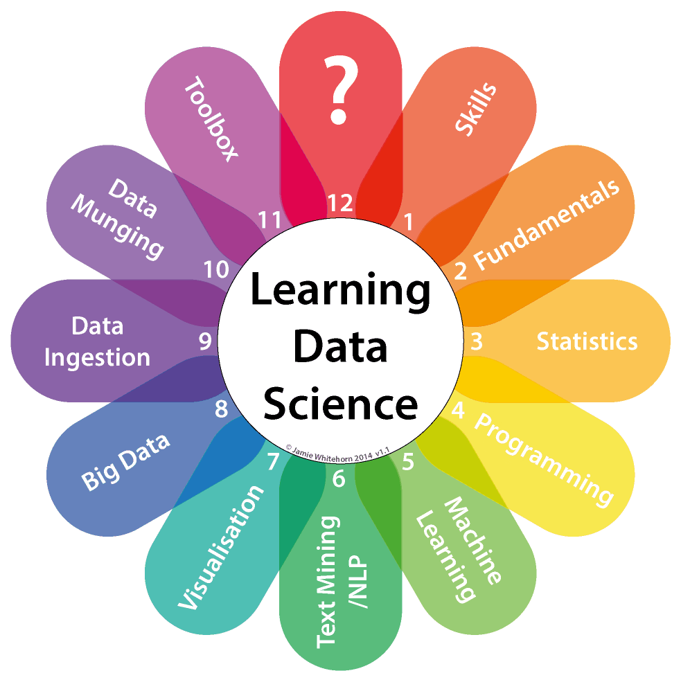

Introduction

Jeremy Leipzig
Department of Information Science
College of Computing and Informatics
Drexel University
Course intent
This is a first course in data science.
It will provide an overview of most aspects of the discipline.
This is a self-contained survey course with no prerequisites,
with content organized through readings and class discussions.
Who should take this course?
Anyone. Data science is becoming pervasive.
Any discipline where data is prevalent can benefit,
and data is becoming prevalent in more and more places.
As mentioned, there are no prerequisites.
It is required for DS, IS, and CST majors, and DS minors.
What will you get out of this course?
An overview of the skills that go into data science,
and an understanding of the tasks undertaken in data science.
- Among other topics, this includes:
-
what data is and where to find it,
-
the differing work that gets done across the discipline,
-
typical components of a data science project, and
-
characterizations of "Big data."
If you want to see more of anything...
...take the major!
- Programming and development
-
Web Systems and Services I: INFO 151
-
Computer Programming I: CS 171
-
Data Science Programming I & II: INFO 212 & 213
-
Cloud Computing and Big Data: INFO 323
- Analysis and exploration
-
Social Media Data Analysis: INFO 440
-
Exploratory Data Analytics: INFO 311
-
Advanced Data Analytics: INFO 411
-
Data Mining Applications: INFO 371
If you want to see more of anything...
...take the major!
- Curation, management, and access
-
Data Curation: INFO 202
-
Applied Data Management: INFO 153
-
Database Management Systems: INFO 210
-
Information Retrieval Systems: INFO 300
-
Introduction to Information Security: INFO 333
If you want to see more of anything...
...take the major!
- Design and visualization
-
Information Visualization: INFO 250
-
Human-Computer Interaction II: INFO 310
-
Visual Analytics: INFO 350
- Social aspects and collaboration
-
Social Aspects of Information Systems: INFO 215
-
Issues in Information Policy: INFO 216
-
Software project management: INFO 420
-
Team Process and Product: INFO 324
Course structure
- Overview:
- Blackboard Discussion (25%)
- Four homework assignments (40%)
- Two exams (40%)
Discussion
- For full credit:
- Write a 250-500 essay (several choices will be given)
- Chime in thoughfully on another student's thread.
Homework
- For full credit:
- Complete your assignments in a timely fashion.
- Make sure your responses are cogent and concise.
- Think creatively about your responses.
- Relate your experiences to the questions asked.
- Complete all required readings.
- Participate in class discussions.
- Ask questions and affirm your understanding.
Exams
- For full credit:
- Complete all required readings.
- Get involved in the online discussions
- Make sure your responses are cogent and concise.
- Ask questions and affirm your understanding.
Recap
Data science reaches into a lot of fields.
This survey course is intended for everyone.
- Up next, an overview:
-
What is data science?
-
Who is a data scientist?
-
What is data?